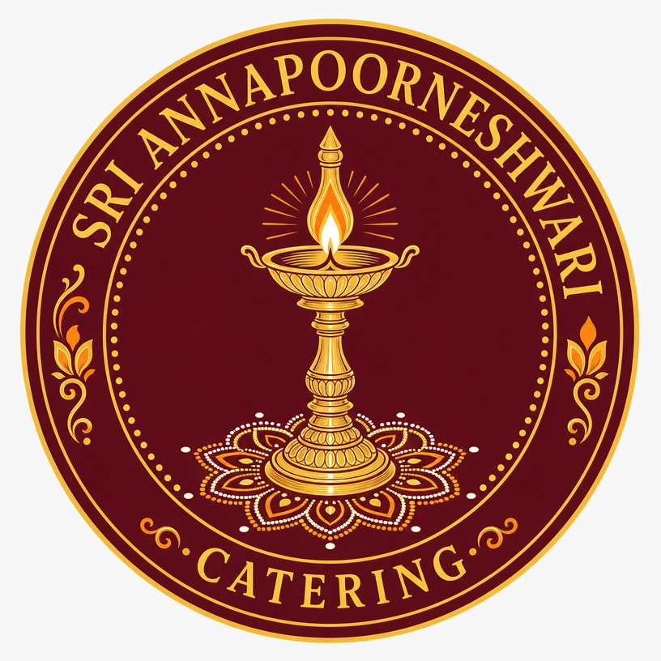

100% Pure Vegetarian
We only prepare and serve Pure Vegetarian Food, maintaining high standards of cleanliness, quality, and traditional taste.

TRADITION • TASTE • PURITY
Traditional vegetarian catering prepared with care for weddings, religious occasions, family celebrations and every special gathering.
Explore Our MenusABOUT US
We only prepare and serve Pure Vegetarian Food, maintaining high standards of cleanliness, quality, and traditional taste.
Traditional and authentic food prepared specially for Sumangali Prarthana and other religious occasions.
We provide complete catering services at your preferred location, bringing our cooking and service directly to your doorstep.
We undertake catering orders for marriages, engagements, housewarming ceremonies, birthdays, anniversaries, religious functions, and other special occasions.
We can prepare food according to your requirements, occasion, preferences, and number of guests.
Our dishes are prepared using traditional cooking methods and carefully selected ingredients to provide a delicious homemade taste.
From breakfast and lunch to special function meals, festive dishes, sweets, snacks, and Bakshnam, we offer a wide variety of vegetarian food options.
We give utmost importance to freshness, cleanliness, hygiene, and the quality of ingredients used in every preparation.
Every order is prepared with dedication and care to make your special occasion memorable with delicious, satisfying food.


OUR MENUS
Explore our traditional Bakshnam and complete vegetarian catering menus.

5 Round Chakli, 7 Round Chakli, & 9 Round Chakli.


“Traditional taste, pure vegetarian goodness, and heartfelt service for every occasion.”
GET IN TOUCH